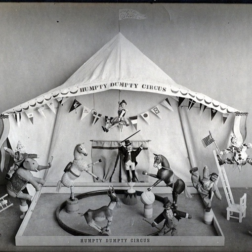
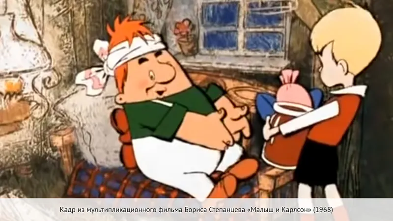
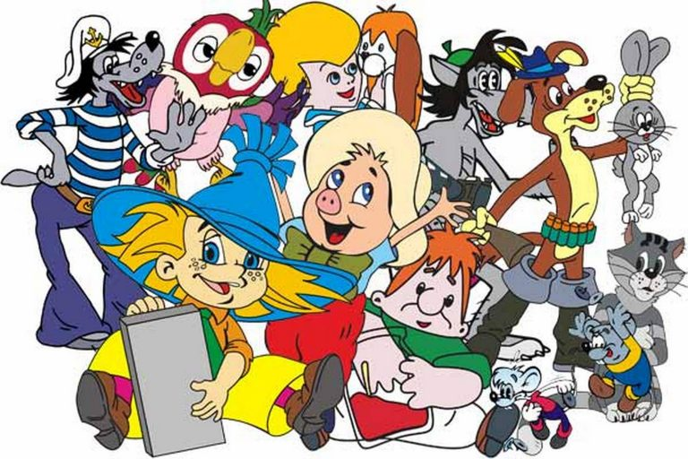
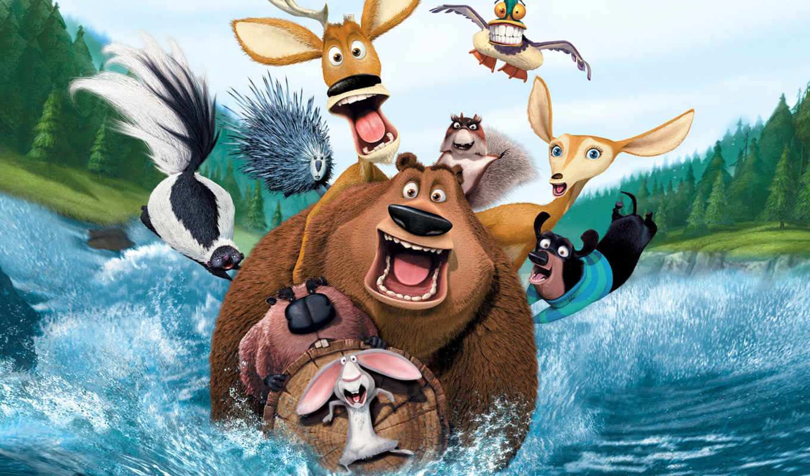
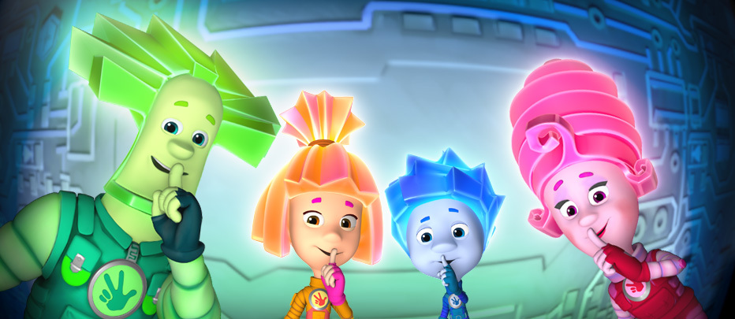

Первый мультфильм в мире
Первый мультфильм в мире. Первым мультфильмом в мире принято считать «Цирк лилипутов»,который был показан небольшому кругу зрителей в 1898 году. Его создатели — Джон Стюарт Блэктон и Альберт Э. Смит. Этот мультфильм был кукольным.
Советские мультфильмы
Открывая для себя мир старой советской мультипликации, удивляешься такому количеству шедевров. Непростое время 70-х-80-х-90-х породило плеяду талантливых режиссёров, новаторов школы мультипликации. Мультфильмы создавались по философским сказкам-притчам, рассказам выдающихся писателей-фантастов, стихам талантливых поэтов.
 Современные мультфильмы
Отечественные работы последних лет имеют все больший успех у россиян. По данным Movie Research, с 2009 года количество зрителей у полнометражных мультфильмов, сделанных в России или в сотрудничестве с другими странами, выросло в пять раз. А число отечественных лент, как и их доля на российском рынке, — вдвое.
  Мультфильмы